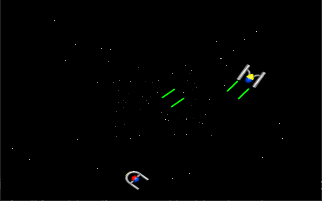
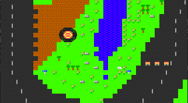

GitHub: jsalin
Thingiverse: jsalin
E-mail: salinjus@gmail.com
I'm a software developer from Finland, with 8+ years experience in a few companies. During studies and sometimes while having some free time I have done some own projects since I was a kid. On this portfolio I attempt to list some of the later personal projects, as what I've been involved in with the companies is usually a secret.
A three wheel droid that can be remote controlled over the Internet with just a web browser. It sends back image with help of a webcam, has switchable front light for use in dark, and it has a switchable laser pointer that can be used for playing with cats.
The project was interesting because while nothing new I never made such a droid myself. Also besides a cgi-bin version I made also a node.js backend to get into more modern web programming.
On hardware level interesting is that I used Arduino instead of a Raspberry Pi, yet had it available on the Internet. Everything possible was done to save on battery life, and I was able to make it have a 5 day standby time. It can be left in a house alone unplugged and during a 5 day window it is possible to wirelessly turn it on and start using full features, which consume a lot more power.
3D designs: thing:1419221 on Thingiverse
Source code: jsalin/catrover on GitHub
A simple program that acts as a gateway between DosBox emulator's IPX tunneling protocol and a real physical IPX network. This lets you to play old multiplayer games so that one computer can be a real retro computer and the other one can be a modern PC running just DosBox emulator and this gateway.
Besides being a simple refresher for some Unix style C programming, it involved sending and reading raw packets on Ethernet level, which is interesting.
Source code: jsalin/ipxgw on GitHub
A MIDI controller that resembles playing with a flute. The shape is 3D printed and it has a pressure sensor for air flow from mouth piece. Fingers are detected with capacitance on metal surfaces that resemble the holes on a flute. Hardware is a standard Arduino and the software sends MIDI commands either to a real MIDI port with help of a couple resistors, or to the USB serial port for a computer. The idea, designs and code are by me. I made it when I was trying out a real flute and found out there were only a few really expensive products available from companies to make a flute go electric. :)
3D designs: https://www.thingiverse.com/thing:1411062
Source code: jsalin/eflute on GitHub
ESP8266 is basically a small MCU board with integrated WiFi chip, and when coming from the manufacturer the default software on it emulates a standard serial port modem with the standard AT command set + some extra. It seemed a good try for getting some old retro computers "online", like a C64, Amiga or an old PC with just serial port. There are still some telnet BBSes on the Internet that work with old terminal programs, or you could connect to your own modern computer for transferring some files wirelessly to an old computer.
It turned out the default firmware was rather poor for anything else than really basic use, so I made a better modem/telnet emulator using Arduino IDE for ESP8266 programming. I got it as far as stable "high" speed file transfers using zmodem, telnet BBS'es working well, and even Doom multiplayer game between two DOS laptops was working OK. It seems I was not the only one with the idea as there are more such projects for the ESP8266 in existence now.
Source code: jsalin/esp8266_modem on GitHub
I had a few years spree, when I did a lot of 3D pring using a Welleman K8200 built from a kit, and later some upgrades applied. I sometimes needed also something specific that I had to design/draw myself, and did so using SolidWorks. The designs are available on my thingiverse profile.
During elementary and vocational schools I spent a lot of time programming small games and some demos on PC of the time. Mostly direct VGA graphics on DOS with Turbo Pascal 3.0 or QuickBasic 4.5 with some x86 assembler code and libraries to access a sound card. One friend who was also into programming was great to do some projects with. The actual resolution was good enough to be thumbnails these days. :)
 © 2020 Jussi Salin